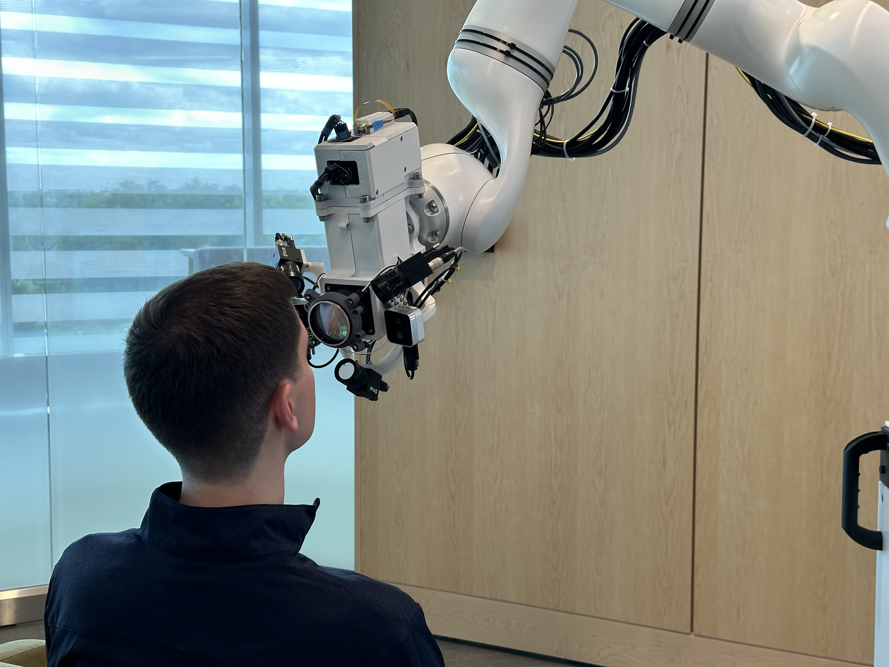
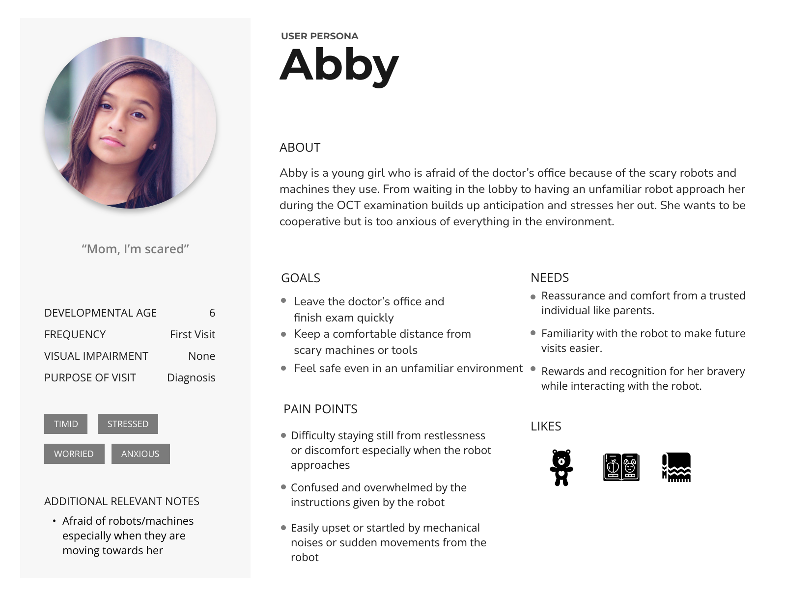
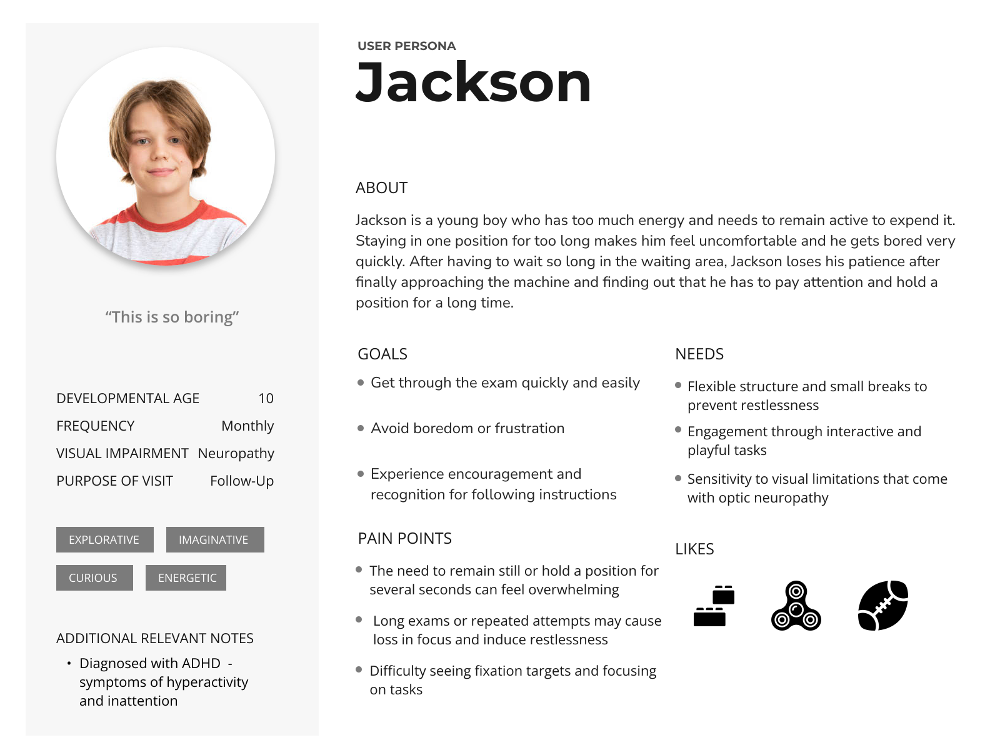
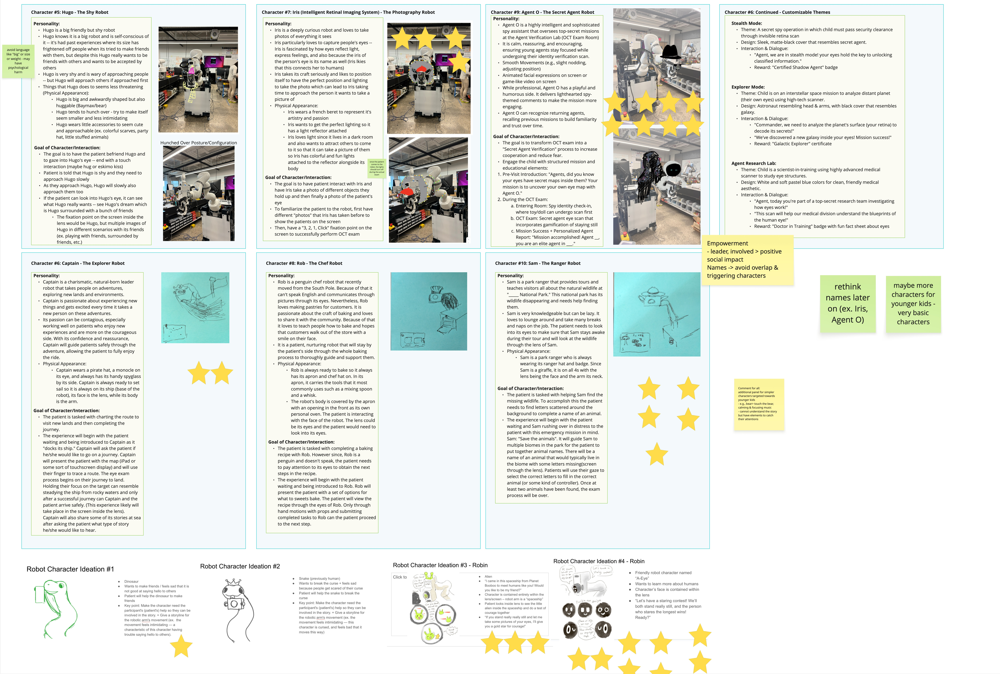
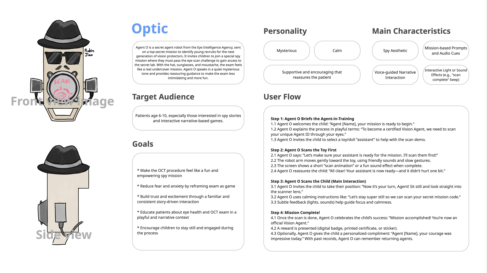
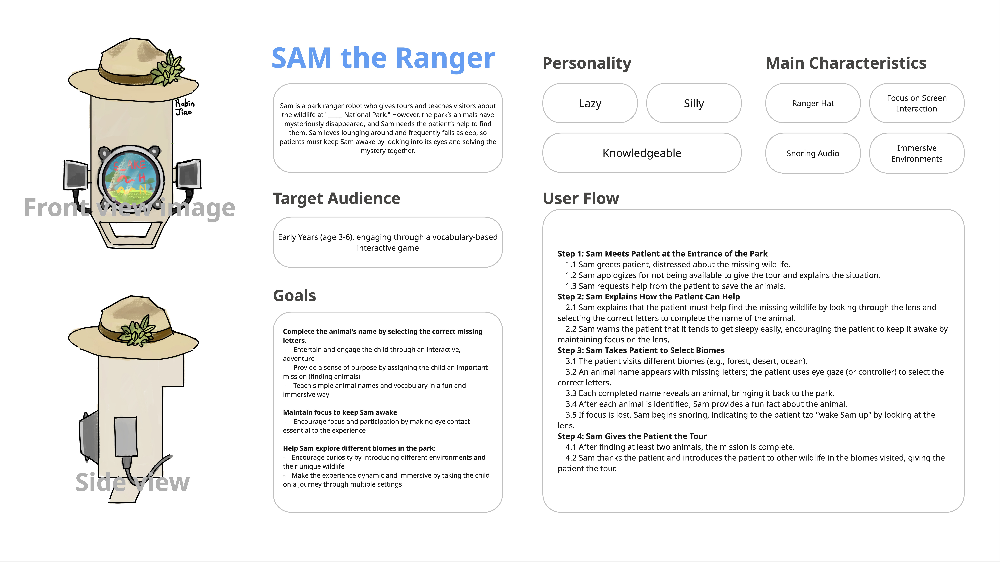
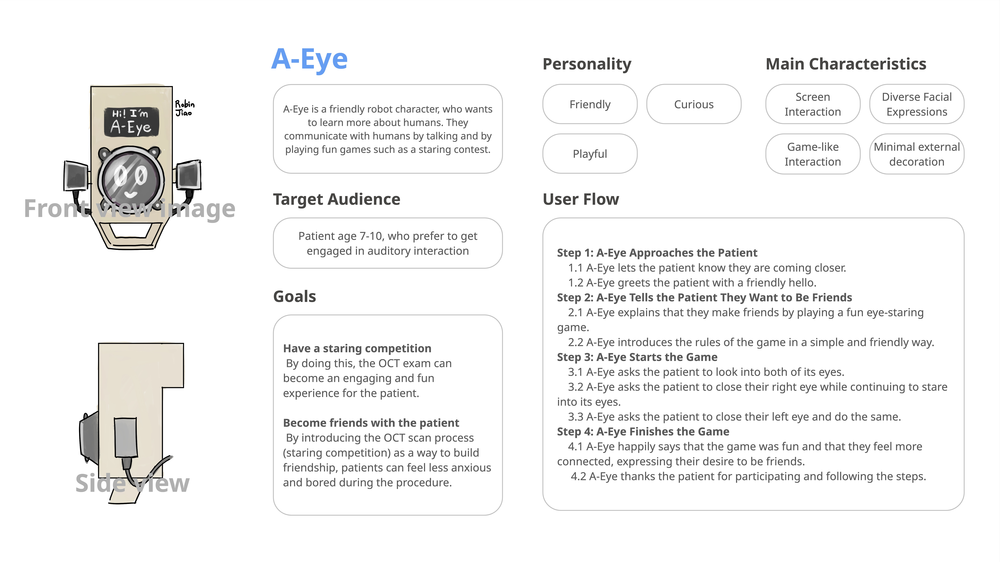
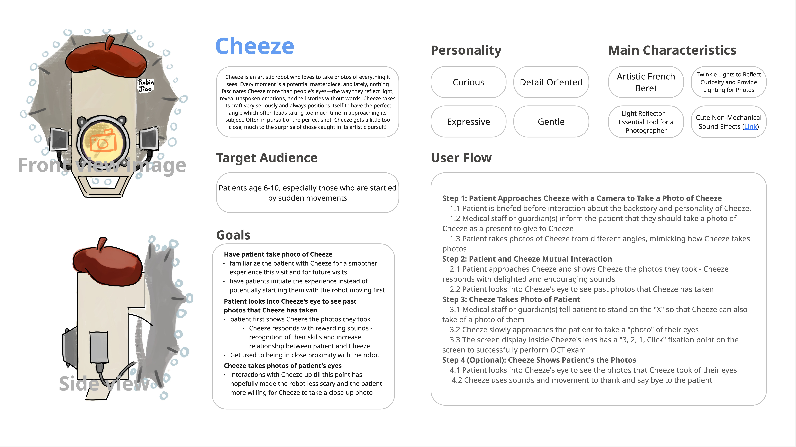
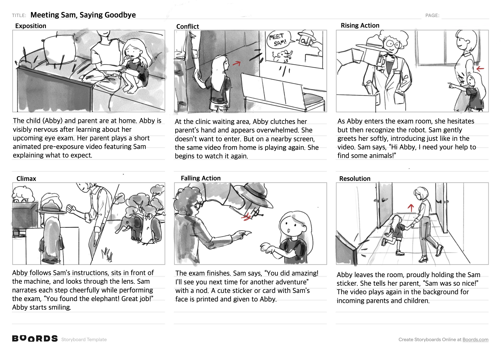
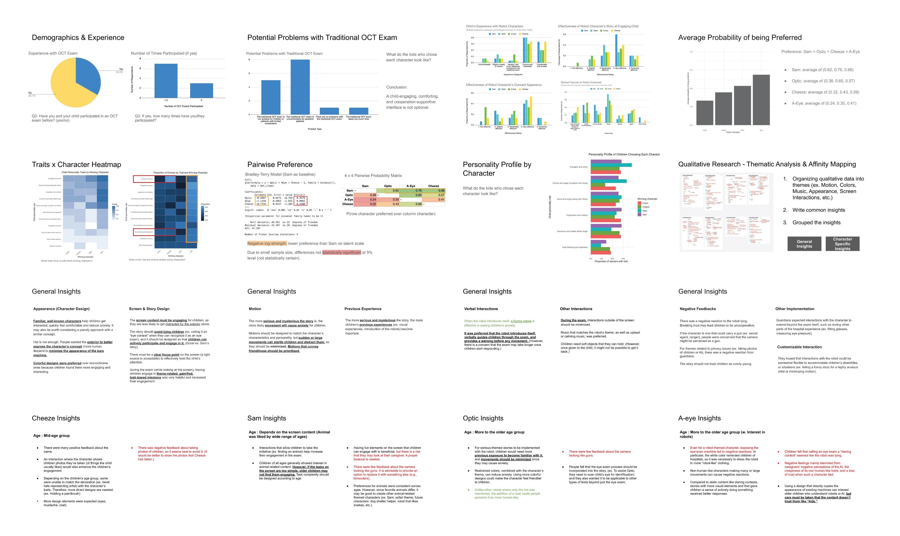

The Problem
The mechanical design was finalized. But the robot had no name, no face, and no way to tell a frightened child that everything was going to be okay. 53% of caregivers said the standard OCT exam is uncomfortable for children.
My Role
I owned the character design system, survey research and analysis, storyboard, and pre-exposure media. I translated raw caregiver data into a design direction the team could build from.
Key Design Decisions
Three choices that shaped the interaction system, each one traceable to survey data.
01
Character over function
The robot's mechanical capability was already defined; the missing layer was personality. Children meet Sam at home first, so by the time they walk into the exam room, he's someone they already know.
02
Data-driven design
I designed the survey as forced-choice pairwise comparisons and fit a Bradley-Terry model to the results. The model favored Sam in every matchup; the gaps weren't individually significant at n=30, so I triangulated with qualitative coding before recommending him.
03
Pre-exposure before first contact
Familiarity is built at home, before the child ever sees the arm. The pre-exposure video does that work.
The Robot
The hardware was done before I arrived. Everything the child would feel about it wasn't.
01
Research & Strategy
Four methods, one question: what actually makes children less afraid?
I started by shadowing real OCT procedures at Kellogg Eye Center: wait times, friction points, how children reacted to the equipment in the moment.
It's a super cool project. Has the potential to make the situation so much easier for children.
Caregiver, Kellogg Eye Center surveyKey insight
The model favored Sam in every matchup: 62% over Optic, 68% over Cheeze, 76% over A-Eye. At n=30 no gap cleared significance, but the direction never flipped.
The call
I recommended Sam on converging evidence, not one clean statistic, and documented the uncertainty in the paper.
Why forced-choice
Caregivers rate everything positively on a Likert scale. Forced choice surfaces what they'd actually pick.
Shadowing revealed two different kids in the same room, and two different design problems.
"What is that thing? Is it going to hurt me?"
Needs comfort and familiarity before anything else.
"How long is this going to take?"
Needs engagement and a sense of mission to stay cooperative.


The Journey We Set Out to Change
How comfort shifts across the visit, with and without Sam.
Without Sam, comfort collapses at first contact. With Sam, it holds, which is what makes the scan possible.
Age 6, comfort first

Age 10, mission first

02
Character Design
Four concepts, one recommendation: Sam the Ranger, for cross-age appeal and clinical fit.
Each concept targeted a different emotional register. Survey data and medical staff review narrowed the field to Sam, a mission-driven ranger who reads well across ages.


+ verdict
★ prioritized
+ verdict
+ verdictThe robot must never lie.
One concept framed the scan as a staring contest. Children saw through it, called the robot creepy, and stopped cooperating. Sam's narrative does the opposite: the exam is real, and the child's role in it is real.
03
Storyboard & Pre-Exposure Media
I structured the storyboard to mirror the child's own emotional arc: Sam's introduction builds trust before the exam, and Sam's farewell closes the story with a good memory. I illustrated the pre-exposure video in Procreate for home and waiting-room viewing.

04
Data Analysis & Deliverables
What the numbers said, what caregivers said, and what I did with both.
I built or analyzed everything below except the physical prototype, which the engineering team continued after my involvement ended.

Survey Results
Method
30 caregivers completed a 40-question survey after viewing pre-exposure videos at Kellogg Eye Center.
Key insight
Over 60% reported curiosity and interest in every character; 80% rated Sam very or extremely effective at engaging children.
30
caregivers surveyed at Kellogg Eye Center
70%
of caregivers preferred character-guided interaction over the traditional pediatric OCT exam
4
robot character concepts designed and tested
2
personas from in-clinic observation
Head-to-head predictions
I fit a Bradley-Terry model to the forced-choice data to convert raw picks into matchup probabilities: 62% over Optic, 68% over Cheeze, 76% over A-Eye.
05
Designing Under Constraints
01
The IRB clock
Constraint
Direct child surveys required an approval cycle longer than our project window.
My response
I designed a caregiver-report instrument capturing children's states through parent observation. Their spontaneous reactions during sessions entered the data anyway.
02
Fear blocks the scan
Constraint
An OCT scan needs a still child. A frightened one moves, cries, or refuses. Two thirds of our families were first-timers, the most anxious group.
My response
Anxiety reduction was a functional requirement: a scared child can't be scanned.
03
The clinic filters everything
Constraint
Every concept had to survive infection control, cleaning cycles, and equipment contact.
My response
One robot. Multiple swappable characters. Outfits and masks come off and go through the wash, no hygiene compromise.
06
Interaction System
Every behavior below traces to one of these three principles.
The film above visualizes this system; the tables below define it.
Interaction Specification
Home
Goal
Reduce anticipatory anxiety before the visit.
Sam
Not yet present, the child meets Sam through gentle pre-exposure media first.
System
Child-facing familiarity animation (watercolor) played at home.
Waiting room
Goal
Reinforce familiarity right before the exam.
Sam
Still off-stage.
System
The animation replays; the child recognizes Sam before entering.
First contact
Goal
Build immediate trust.
Sam
"Hi! I need your help to find some animals."
System
Motion sensing triggers the greeting.
Calibration
Goal
Detect and align to the eye without pressure.
Sam
"Let's stay super still so we don't scare them."
System
Camera head approaches; face/eye alignment (disguised OCT positioning).
The game
Goal
Keep the child still and engaged.
Sam
"Look right into my eye, I'll show you something!"
System
Eye-gaze vocabulary game; scan captured while the child focuses.
Success
Goal
Reward effort, leave a positive memory.
Sam
"You found the deer! Great job!"
System
Scan paired with celebratory feedback.
Goodbye
Goal
End on a warm note.
Sam
"You did amazing! See you next time!"
System
Sticker printed.
When it goes wrong
A spec that only covers the happy path isn't a spec. These are Sam's responses when a child disengages, including when Sam steps back.
Assumes voice output, a display, and basic motion/audio sensing. Detection methods are proposals for engineering validation.
| Situation | Detection (proposed) | Sam's response | Escalation |
|---|---|---|---|
| Child startled by Sam's approach | Sudden recoil / gaze lost as the head nears | Stop, ease back, lower the head (apology), then one reassuring nod | Re-approach slowly; if still uneasy, pause and wait |
| Child cries | Audio level | Pause dialogue 5s, soften posture | One gentle re-invite, then clinician handoff |
| Child looks away | Gaze/motion tracking lost | "Let's find the deer!" | No response in 10s → pause and wait |
| Child moves during scan | Motion exceeds threshold | Calm reminder to stay still | Pause scan, resume from last segment |
| Adult speaks (parent/clinician) | Voice overlap | Sam stops speaking immediately | Resume only after silence |
| Exam interrupted | Timeout | Save state, friendly hold message | Resume from previous step on return |
Sam never
- Sam never lies about the procedure. (From research: a deception-based concept was rejected on trust grounds.)
- Sam never blocks the child's path to their parent.
- Sam never raises volume or speeds up when a child disengages.
07
Where I Left It
My involvement ended December 2025. Here's what shipped, and what came after.
Handoff
A validated character, a two-part storyboard, the pre-exposure video, and a concept film of the interaction system.
Continued
The engineering team carried the physical prototype forward from there.
Published
A co-authored abstract in Investigative Ophthalmology & Visual Science, presented at the 2026 ARVO Annual Meeting.
In pediatric healthcare, a child's emotional state decides whether the exam can happen at all: a scared child moves, cries, or refuses, and the scan fails. Emotional design was the difference between a usable device and an unusable one.
A-Eye failed because it lied, and that failure became the system's first principle. Children don't need the truth softened into fiction; they need a real role in a real story.